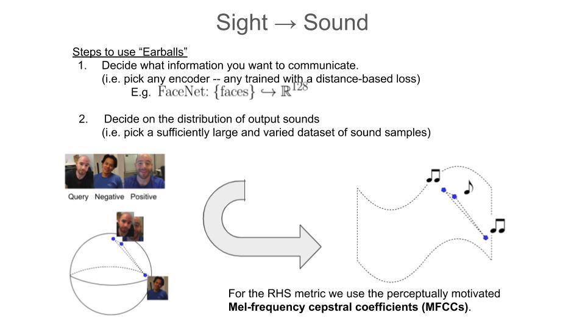
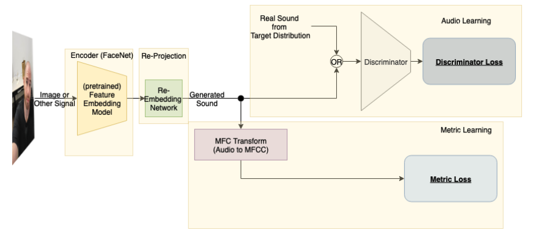
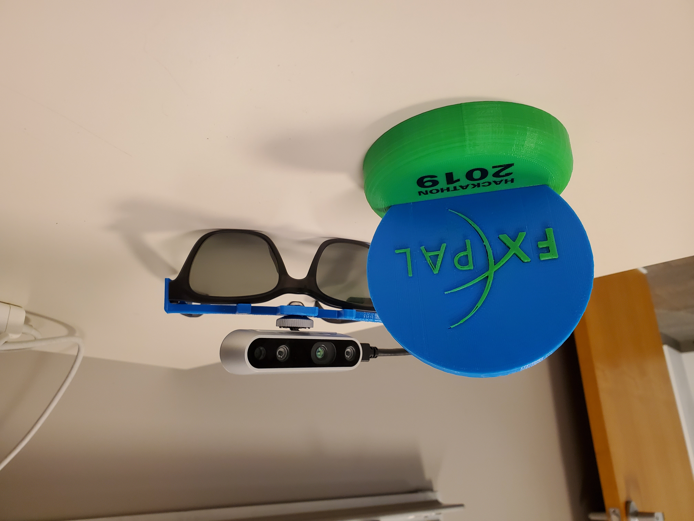
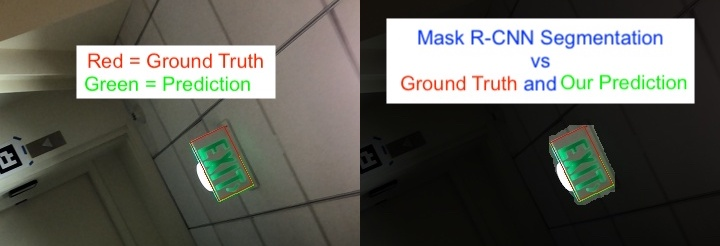
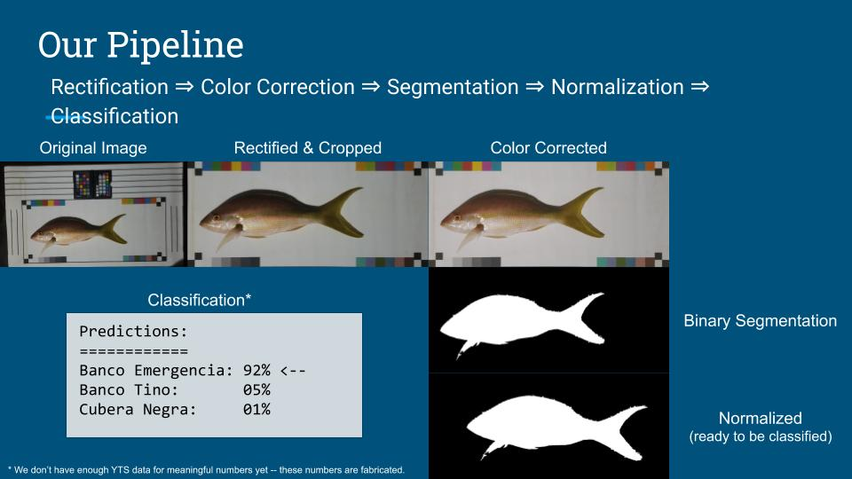
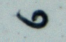
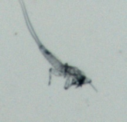
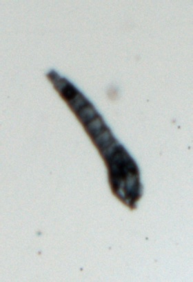
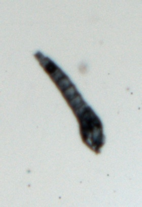
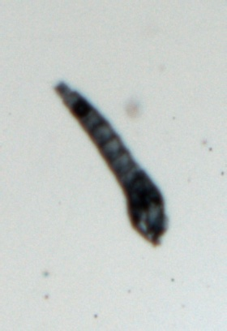

Recent Research Projects
(in semi-chronological order)
Earballs is an attempt (the first I'm aware of) to use machine learning for sensory
substition, i.e. to create an information preserving map from the visual to the non-lingual
audio domain. The goal being to make visual information (and other any types of information)
available to users through their ears.
The system uses a pretrained image embedding network to extract visual
features and embed them in a compact subset of Euclidean space – this converts
the images into feature vectors whose L2 distances can be used as a meaningful
measure of similarity. A generative adversarial network (GAN) is then used to find
a distance preserving map from this metric space of feature vectors into the metric
space defined by a target audio dataset equipped with a psychoacoustic distance metric.
The idea being that the features from a pretrained pretrained image embedding network
is essentially used to compress the visual information into an image into a much smaller
amount of information which can be communicated to the user through sound.
Papers (Earballs, Face-to-Music Translation).
Related papers, patents, and awards
Related papers, patents, and awards
- A. Port, C. Kim, M. Patel, "Earballs: Neural Transmodal Translation", submitted to NeurIPS 2020
- C. Kim, A. Port, M. Patel, "Face-to-Music Translation Using a Distance-Preserving Generative Adversarial Network with an Auxiliary Discriminator", submitted to ACCV 2020
- Patent pending (FXPAL 2020), A. Port, D. Cavdir, C. Kim, M. Patel, D. Kimble, "Earballs: Transmodal Translation of Feature Vectors to Audio for Assistive Devices"
- Recipient of the “esteemed judges’ choice” award @ 2019 FXPAL Hackathon.



We use least energy optimization on heatmaps output by Mask R-CNN as a quick and clean method to achieve superhuman segmentations on quadrilateral exit signs. The resulting model generalizes surprisingly well on rectangular exit signs of different color and design.
Related papers
Related papers
- A. Port, R. Manduchi, "Accurate Quadrilateral Regression for Binary Instance Segmentation using Mask-RCNN and Basin Hopping", submitted to MCPR 2019

Lead development of deep learning-based computer vision technology for monitoring
fishery spatial population distributions in Belize and Honduras. This work required
development use of convolutional neural network models for semantic segmentation,
contour-based image classification, keypoint detection as well as non-ML steps like
color correction and rectification. Also worked with biologists to design data
collection and analysis methodology.
This work was supported by The Rare Fish Forever Project.
This work was supported by The Rare Fish Forever Project.

A collaboration with freshwater ecologist, Nick Macias, to use classify and count bugs as they flow by a camera station in a river.


 

